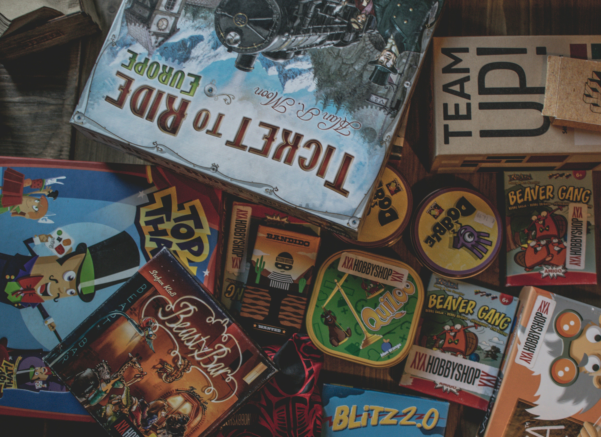
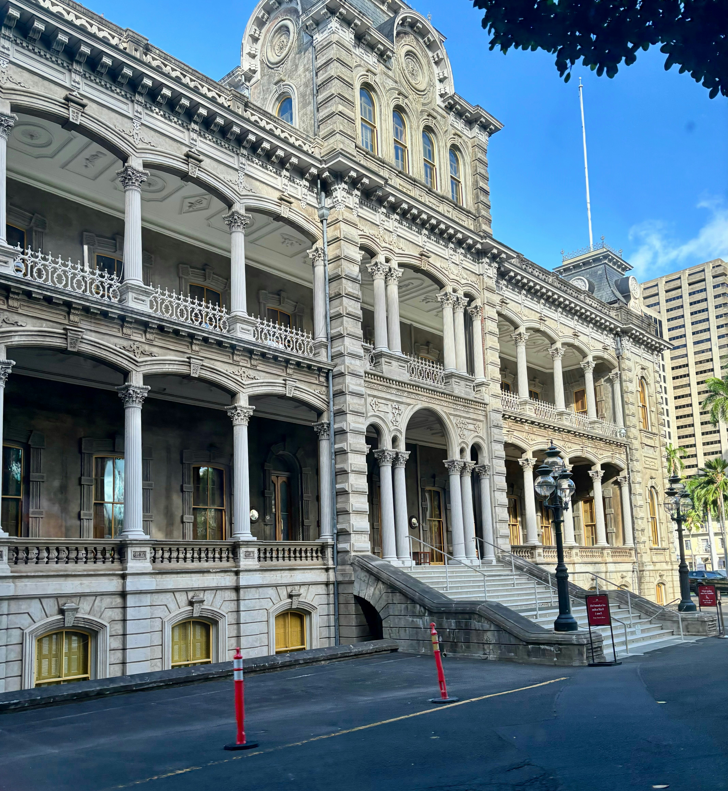

History Of Hawai'i Section.
In this page, I will explain Hawaiian culture and the parts that stand out to me.

Makahiki Season
What are makahiki games? Makahiki games are Hawaiian traditional games. It was a time for peace and celebration. When there used to be war between the chiefs , this time was used for peace. The season was between October-February. Games that are included: wrestling (Hakoko),spear throwing(o’o ihe), arm wrestling(uma),bowling(Ulu Maika) and Hawaiian checkers( konane), racing(kukini),Dart sliding(Moa pahe’e) and much more! These games represent how they were in war and was also in preparation for war. Makahiki games honors the god lono(represents gentle and life cycles of nature). This was a time to put war away and have peace.

Iolani Palace
What is Iolani palace? Iolani palace was Queen lili’uokalanis palace,home. And prison. Going back to the overthrow, she was in prisoned in her own home. When the “pale skins “ took over, they made her be imprisoned in her own room. She had no contact to the outside world or her people who she truly loved and cherished. When she was imprisoned, her people tried diffrent ways to either get in contact or to update her. For example, she could receive gifts from her people and there was news paper being delivered. People would use the news paper and wrap the flowers in it and she would read what was going on and what people have been talking about.
Who is Queen lili’uokalani? Queen lili’uokalani was the last Queen of Hawai’i’s Monarch. She is important not only because she was the last of the Hawaiian monarchy, but because she advocated for her people and fought annexation and left a legacy for native Hawaiians today. She was a leader and also a symbol of Hawai’i and Iolani palace represents that.

Soverignty
What does sovereignty mean to Hawai'i? Sovereignty first started with the overthrow. Sovereignty started when Hawai’i was once its own nation. Sovereignty is emphasized to protect the land. It's seen as Hawai'i's land. We came from the aina and relied on it. Hawaiians used land to eat, use it for war, to drink out of and much more. Land meant so much for us since it was one thing we could have and use it to live. We had our own Lo’i patch or also known as taro. We use it for our foods, medicine, and practices. This seeks for restoration because of the overthrow. Since the overthrow and the “paleskins: took over , they received political power and gained power over our resources and we couldn't use Sovereignty. For example, nowadays people use this as a practice and still live off the land to keep Hawaiian Lands in Hawaiian Hawaiian Hands.
What can you do to help?
- Learn True history: Look online And watch Haunani Kay Trask and how she talks about advocating for Hawai'i and much more! (Which is also linked in my resources)
- Correct Assumptions: Study the overthrow, and gently educate other people about Hawai'i and that its not just a tropical paradise, but that its also history.
- Supoort local and indiginous econimies: Spend your time at local farms and see how they live and how they grow local foods
- Eat Local: Eat native foods and support buisness
- Volounteering: Volounteer yourself at loacal sites that need help restoring( linked in resources)